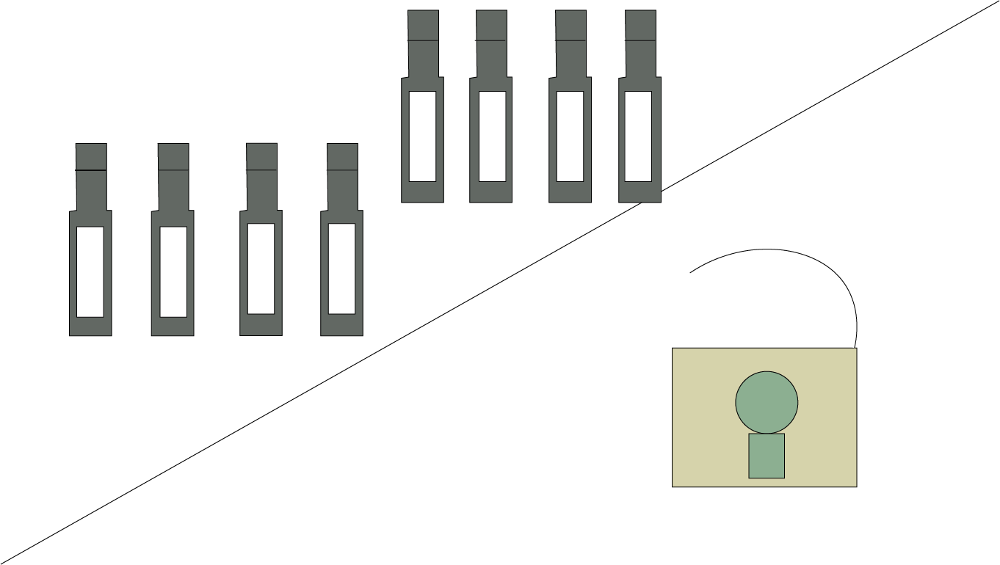

(Wrong choice you got trapped and teleported to a cellar by Elenor.)
Elenor- “This is why you do not mess with people who have magic”.
You can hear her voice, but you can't see her.
(You survey the area to look for objects to help you escape, but all you see are wine bottles. Suddenly Eleanor appears).
Daniel- “Let me out, this is not funny.”
Daniel-“No way, you are definitely crazy and I want to see you suffer.”
Daniel-“You are definitely evil” ( Elenor leaves)
Should you?